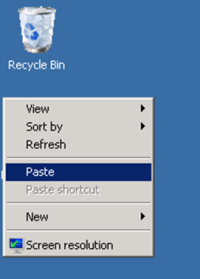

layout: post
title: EPiServer in the Cloud - a quick start guide
author: timole
excerpt: This is a short guide for installing EPiServer to a cloud server. The target audience is TUT students on course MATHM-37200 Hypermediajärjestelmät, where a visiting lecture was held on Wed 28.11.2012. Please feel free to ask questions on installing EPiServer, if you have any problems.
This is a short guide for installing EPiServer 7 to a cloud server.
If you have any problems, please feel free to ask questions on the bottom of the page!
The goal is to put EPiServer 7 up and running to a Windows 2008 cloud server. The URL address of your server will be http://yourownaccount.no-ip.org . What you need to do is:
- Get a free DNS name from No-IP.com
- Get a free Windows 2008 cloud server from Upcloud
- Configure your server and install prerequisites
- Install EPiServer to the cloud
- Surf to http://yourownaccount.no-ip.org
Step 1: Get a free DNS name from No-IP.com
- Reqister at No-IP server http://www.no-ip.com/
- Create a new Host by clicking Add Host
- Use default values for the IP address and other fields and click Save
Step 2: Create a cloud machine to Upcloud
- Register at http://fi.upcloud.com/rekisteroidy
- Login and create a new virtual Windows server (choose Windows Server 2008 R2 as image)
- Enter yourownaccount.no-ip.org as the FQDN name.
- Click create and wait a while when your virtual cloud server will be ready. Choose "send password to email"-option.
- Link the domain name to the cloud server: Copy the IP address of your machine to the clipboard. It is like 80.69.174.99 or whatever Paste the IP address to your host settings at no-ip.org
- Wait a minute or two now so that DNS is updated.
- Login to server yourownaccount.no-ip.org by using RDP: Start Remote Desktop Connection -application from the Start menu (Mac users, start CORD) and enter yourownaccount.no-ip.org as the host name.
- Login with user name Administrator and password that was sent to you by email.
- Now you should see the desktop of your server:
- Create a new user called "episerver" with administrator privileges: go to Control panel -> Add or remove user accounts -> Create a new account (choose Admnistrator as account type)
- Log out and login again, now as user episerver.
- Install .NET Framework 4: Download the installation file to your desktop computer from http://www.microsoft.com/en-us/download/details.aspx?id=17851
- Copy the file to clipboard.
- Paste the file to the virtual server desktop.

- Install .NET Framework by double clicking the installation file at the server.
- Install ASP.NET MVC 4: Download file from http://www.asp.net/mvc/mvc4 and save it to your desktop computer. Then copypaste the file to the virtual server and install by double clicking it etc.
Step 4: Install EPiServer to the cloud
- Install EPiServer 7 by downloading it from http://world.episerver.com/Download/Items/EPiServer-CMS/EPiServer-7---CMS/ . Once again, copy paste the file to the virtual server, execute installer etc.
- When the installation is finished, Start the deployment center.
- Choose option Install site and SQL Server database
- Use default values for everything except the port (80) and the UI url (/cms/ui). By using port 80 your server will be at address http://yourownaccount.no-ip.org
- You need to start your newly created application. Go to IIS Manager (Start -> Run, type IIS and choose IIS Manager). The stop the default site by choosing stop. After this, start the EPiServer site by choosing it and click start.
- Congratulations, you have now EPiServer up and running and you can start using it at address http://yourownaccount.no-ip.org
- Finally, please add a comment to this page if you survived here - just to know if anyone did it :) . Please ask questions if you have problems.